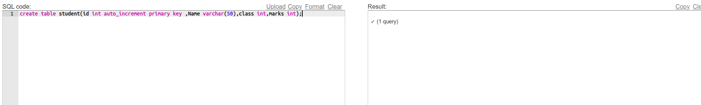
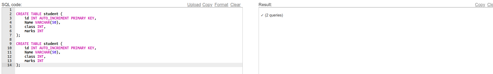
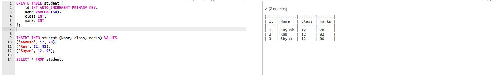
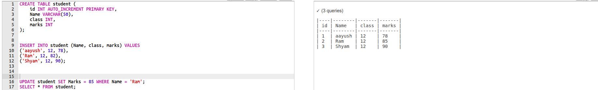
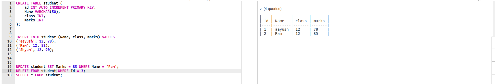

Chapter 1: DATABASE MANAGEMENT SYSTEM
Introduction
data refers to raw facts and figures that can be interpreted and used by computers. It's the fundamental building block of information, often stored in digital formats like files or databases. Once the data is processed, it is converted into the data.Information refer's to data that has been processed, organized, and structured to provide meaning and context.
Features of Information
- Accuracy – Information should be correct and free from errors.
- Relevance – It must be related to the topic or decision-making context.
- Timeliness – It should be available when needed; outdated info loses value.
- Completeness – It should include all necessary data for a full understanding.
- Clarity – Should be easily understood, avoiding confusion or ambiguity.
- Reliability – Comes from trustworthy and dependable sources.
- Consistency – Should not contradict itself and should be uniform across sources.
Introduction To Database
A database is an organized collection of data that can be easily accessed, managed, and updated. It allows users to store large amounts of information in a structured way, making it easier to retrieve and manipulate data efficiently.
Purpose of Database
- To store data in an organized and structured way
- To enable fast and efficient data retrieval
- To ensure data security and restricted access
- To maintain data accuracy and integrity
- To ensure consistency and synchronization across applications
Technologies used in Database
- Table
A table is the basic structure in a database that holds data in the form of rows and columns. Each table represents a specific type of entity, such as "Students" or "Products". The rows represent records, and the columns represent fields.
- Field
A field is a single piece of data; it's a column in a table. Each field holds data of a specific type, such as a name, age, or email address. For example, in a "Students" table, fields might include StudentID, Name, and DateOfBirth.
-
Record
A record is a row in a table, representing one unit of data or an individual item. For example, a single student's full information in the "Students" table is one record.
- Tuple
A tuple is another name for a record — a single row in a relational table. The term "tuple" is commonly used in theoretical discussions about relational databases.
- Object
An object in a database context refers to an instance of a class in object-oriented databases. It can encapsulate both data and behavior, allowing for more complex data structures.
- Keys
Keys are attributes or sets of attributes that uniquely identify records in a table. The most common types of keys include:
- Primary Key: A unique identifier for each record in a table, ensuring no two records have the same value.
- Foreign Key: A field in one table that uniquely identifies a row of another table, establishing a relationship between the two tables.
- Composite Key: A key that consists of two or more fields to uniquely identify a record.
- Data Dictionary
A data dictionary is a centralized repository that contains metadata about the database. It includes information about tables, fields, data types, relationships, constraints, and other database objects. It serves as a reference for database administrators and developers to understand the structure and organization of the database.
Database Management System (DBMS)
A Database Management System (DBMS) is software that allows users to create, manage, update, and retrieve data from databases. It serves as an interface between the user and the database. Popular DBMS software includes: ul>
- MySQL
- PostgreSQL
- Oracle Database
- Microsoft SQL Server
- MongoDB (for NoSQL databases)
Objectives of DBMS
- To provide a systematic way to create, retrieve, update, and manage data.
- To ensure data integrity and security.
- To support concurrent access by multiple users.
- To facilitate data sharing and reduce redundancy.
- To provide tools for data backup and recovery.
Advantages of DBMS
- Data Integrity: Ensures accuracy and consistency of data.
- Data Security: Provides mechanisms to restrict unauthorized access.
- Data Redundancy: Reduces duplication of data across the system.
- Data Sharing: Allows multiple users to access and manipulate data simultaneously.
- Backup and Recovery: Facilitates regular backups and recovery options in case of data loss.
Disadvantages of DBMS
- Complexity: Requires specialized knowledge to manage and maintain.
- Cost: Can be expensive to purchase and maintain, especially for large systems.
- Performance: May suffer from performance issues with very large datasets or complex queries.
- Data Security Risks: If not properly configured, can expose sensitive data to unauthorized access.
Types of Database Model:
A data model is a conceptual representation of the data structures and relationships within a database. It defines how data is organized, stored, and accessed. Common types of data models include:
- Hierarchical Model: Data is organized in a tree-like structure.
- Network Model: Data is represented as a graph with nodes and connections.
- Relational Model: Data is organized into tables with relationships defined by keys.
- Object-Oriented Model: Data is represented as objects, encapsulating both data and behavior.
Integrity Constraints and Types:
Integrity constraints are rules that ensure the accuracy and consistency of data in a database. They help maintain the integrity of the data by enforcing certain conditions. Common types of integrity constraints include:
- Entity Integrity: Ensures that each table has a primary key and that the primary key is unique and not null.
- Referential Integrity: Ensures that foreign keys in one table correspond to primary keys in another table, maintaining valid relationships.
- Domain Integrity: Ensures that data entered into a field falls within a specified range or set of values.
- Key Integrity:Key Integrity is a fundamental concept in relational databases that ensures uniqueness and consistency of data through the use of keys.
- First Normal Form (1NF): Ensures that each column contains atomic values and each record is unique.
- Second Normal Form (2NF): Achieved when a table is in 1NF and all non-key attributes are fully functionally dependent on the primary key.
- Third Normal Form (3NF): Achieved when a table is in 2NF and all non-key attributes are not transitively dependent on the primary key.
- Boyce-Codd Normal Form (BCNF): A stronger version of 3NF that addresses certain anomalies not handled by 3NF.
- Reduces data redundancy
- Improves data integrity
- Facilitates easier data maintenance
- Enhances query performance by organizing data efficiently
- Can lead to complex queries due to multiple table joins
- May result in performance overhead for large databases
- Requires careful design and planning to avoid over-normalization
- Centralized Database:
- Simplified management and administration
- Consistent data access and updates
- Reduced data redundancy
- Distributed Database:
- Improved performance and scalability
- Fault tolerance and high availability
- Data locality for faster access
- Centralized Database:
- Single point of failure
- Performance bottlenecks with high traffic
- Distributed Database:
- Complex management and synchronization
- Potential data consistency issues
- Unauthorized Access: Preventing unauthorized users from accessing sensitive data.
- Data Breaches: Protecting against data leaks and breaches that can compromise sensitive information.
- SQL Injection: Preventing attacks that exploit vulnerabilities in SQL queries to manipulate or access data.
- Insider Threats: Mitigating risks posed by employees or insiders who may misuse their access privileges.
- Data Loss: Ensuring data is backed up and recoverable in case of accidental deletion or system failure.
- Access Control: Implementing user authentication and authorization mechanisms to restrict access to sensitive data.
- Encryption: Encrypting data at rest and in transit to protect it from unauthorized access.
- Regular Audits: Conducting regular security audits and vulnerability assessments to identify and mitigate potential risks.
- Firewalls: Using firewalls to monitor and control incoming and outgoing network traffic to prevent unauthorized access.
- Intrusion Detection Systems (IDS): Implementing IDS to detect and respond to suspicious activities or potential threats.
- Data Backup: Regularly backing up data to ensure it can be restored in case of loss or corruption.
- Installing and configuring database management systems.
- Monitoring database performance and optimizing queries.
- Implementing security measures to protect data.
- Managing user access and permissions.
- Performing regular backups and ensuring data recovery procedures are in place.
- Maintaining database integrity and consistency.
- Firewalls
- Antivirus Software
- Encryption
- Secure Protocols
- Security Policies
- User Training
- Regular Backups
- Access Control
Normalization
Normalization is the process of organizing data in a database to reduce redundancy and improve data integrity. It involves dividing large tables into smaller, related tables and defining relationships between them. The main goals of normalization are to eliminate duplicate data, ensure data dependencies are properly enforced, and simplify data management.
Normal Forms
Advantages of Normalization
Disadvantages of Normalization
Centralized and Distributed Database
A centralized database is a single database located at a central server, accessible by multiple users or applications. It provides a unified view of data and simplifies management but may face performance issues with high traffic.
A distributed database, on the other hand, consists of multiple interconnected databases spread across different locations. It allows for better performance, scalability, and fault tolerance but requires complex management and synchronization mechanisms.
Advantages
Disadvantages
Comparision
| Aspect | Centralized Database | Distributed Database |
|---|---|---|
| Location | Single central server | Multiple interconnected servers |
| Performance | May face bottlenecks | Better performance with load distribution |
| Scalability | Limited by server capacity | Highly scalable with additional nodes |
| Fault Tolerance | Single point of failure | Redundant systems for high availability |
Database Security
Database security refers to the measures and practices implemented to protect databases from unauthorized access, misuse, or damage. It involves safeguarding sensitive data, ensuring data integrity, and maintaining the availability of database systems.
Challenges in Database Security
Security Measures
To address these challenges, various security measures can be implemented:
Roles of DBA
A Database Administrator (DBA) plays a crucial role in managing and securing databases. Their responsibilities include:
Security Measures
Technical Measures
Non-Technical Measures
Past Year Questions of DBMS (2020-2024 and Model Questions)
-
1. What is Database and DBMS? List out the advantages and disadvantages of DBMS.
Answer:- Database: A database is a structured collection of related data that can be easily accessed, managed, and updated. For example, a student information system storing student records.
- DBMS (Database Management System): It is software that enables users to define, create, maintain, and control access to the database. Examples include MySQL, Oracle, and PostgreSQL.
- Advantages of DBMS:
- Improved data sharing and accessibility across users and applications.
- Reduced data redundancy through normalization and relational design.
- Enhanced data integrity and accuracy using constraints and rules.
- Better data security through authentication and access control.
- Efficient data backup and recovery mechanisms.
- Disadvantages of DBMS:
- High initial cost of software and hardware.
- Complexity in design and maintenance.
- Large DBMS may require significant resources and can lead to performance issues.
- Potential security risks if not properly managed.
-
2. Differentiate between file processing system and DBMS. Give at least four points.
Answer:File Processing System DBMS 1. Data is stored in separate files, often leading to duplication. 1. Data is stored in structured tables with relationships, minimizing redundancy. 2. No support for concurrent access or multi-user handling. 2. Supports multi-user environments with concurrency control mechanisms. 3. Security and access control are limited and hard-coded. 3. Provides comprehensive security through authentication and authorization. 4. Maintaining consistency and data integrity is difficult. 4. Built-in integrity constraints maintain data accuracy and consistency. -
3. Explain the different models of DBMS with advantages and disadvantages.
Answer:- Hierarchical Model:
- Data is organized in a tree-like structure using parent-child relationships.
- Advantage: Fast data retrieval for hierarchical data.
- Disadvantage: Inflexible structure; difficult to reorganize or support many-to-many relationships.
- Network Model:
- Data is represented as records connected by links; supports complex relationships.
- Advantage: Can represent many-to-many relationships directly.
- Disadvantage: Complex to design and implement.
- Relational Model:
- Data is stored in tables (relations) with rows and columns.
- Advantage: Simple to use; widely adopted; supports SQL.
- Disadvantage: May be slower for large, interconnected data sets.
- Object-Oriented Model:
- Combines database capabilities with object-oriented programming concepts.
- Advantage: Better suited for complex data like multimedia or engineering design.
- Disadvantage: Slower for traditional data operations; less widespread support.
- Hierarchical Model:
-
4. What is a relational database? How is it different from other database models?
Answer:- Relational Database: A type of database where data is stored in tables (relations) consisting of rows and columns. Each table represents one entity type, and relationships between tables are maintained using keys (primary and foreign keys).
- Differences from other models:
- Hierarchical: Uses a tree structure; suitable for parent-child data but lacks flexibility.
- Network: Uses a graph structure; more complex relationships but harder to manage.
- Object-Oriented: Stores data as objects; good for multimedia and CAD applications but less efficient for simple queries.
- Relational: More flexible, easier to query using SQL, and supports normalization to avoid redundancy.
-
5. What is data redundancy? How does DBMS help in reducing it?
Answer:- Data Redundancy: It refers to the unnecessary repetition of data within a database or file system. For example, storing a student's department name repeatedly in every record.
- How DBMS reduces redundancy:
- Uses relational design where common data is stored in separate tables and linked via foreign keys.
- Applies normalization techniques to break down large tables into smaller, related ones.
- Ensures consistency through constraints and controlled updates.
-
6. Write differentiate between centralized and distributed database systems.
Answer:Centralized Database System Distributed Database System 1. All data is stored at a single location or server. 1. Data is distributed across multiple sites or nodes connected via a network. 2. Easier to manage and maintain. 2. Complex management and synchronization required. 3. Single point of failure can lead to complete system downtime. 3. Failure at one node does not bring the entire system down. 4. Slower access for users in distant locations. 4. Faster access for geographically spread users. -
7. Who is Database Administrator (DBA)? What are the major responsibilities of DBA?
Answer:- Database Administrator (DBA): A person responsible for managing and maintaining the database system to ensure its efficiency, security, and availability.
- Key Responsibilities:
- Database installation and configuration.
- User access control and security implementation.
- Performance tuning and optimization.
- Backup and recovery planning.
- Monitoring database health and troubleshooting issues.
- Implementing data models and ensuring data integrity.
-
8. Define normalization. Explain 1NF, 2NF and 3NF with suitable examples.
Answer:- Normalization: The process of organizing data in a database to reduce redundancy and improve data integrity by dividing large tables into smaller, related tables.
- 1NF (First Normal Form): Ensures atomicity – each cell should hold a single value.
Example: Avoid storing multiple phone numbers in one field. - 2NF (Second Normal Form): Achieved when the table is in 1NF and all non-key attributes are fully functionally dependent on the primary key.
Example: In a table with composite key (StudentID, CourseID), move CourseName (depends only on CourseID) to a new table. - 3NF (Third Normal Form): Achieved when the table is in 2NF and there is no transitive dependency.
Example: If Student table has DepartmentName dependent on DeptID, move DepartmentName to a separate Department table.
-
9. Explain the terms: primary key, foreign key, and candidate key with examples.
Answer:- Primary Key: A field (or set of fields) that uniquely identifies each record in a table.
Example: StudentID in Students table. - Foreign Key: A field in one table that links to the primary key of another table to establish a relationship.
Example: DeptID in Students table referencing Departments table. - Candidate Key: All possible fields that can act as a primary key. One of them becomes the primary key.
Example: Email and StudentID can both uniquely identify a student.
- Primary Key: A field (or set of fields) that uniquely identifies each record in a table.
-
10. What is SQL? Explain its components and common functions.
Answer:- SQL (Structured Query Language): A standard language used to communicate with and manipulate relational databases.
- Main Components of SQL:
- DDL (Data Definition Language): Defines database structure.
Commands: CREATE, ALTER, DROP - DML (Data Manipulation Language): Manipulates data.
Commands: SELECT, INSERT, UPDATE, DELETE - DCL (Data Control Language): Controls user access.
Commands: GRANT, REVOKE - TCL (Transaction Control Language): Manages transactions.
Commands: COMMIT, ROLLBACK, SAVEPOINT
- DDL (Data Definition Language): Defines database structure.
- Common SQL Functions: COUNT(), SUM(), AVG(), MIN(), MAX(), GROUP BY, ORDER BY
-
12. Write SQL commands to perform the following operations:
Answer:-
Create a table named students with the fields: Id, Name, Class, and Marks.
CREATE TABLE students ( Id INT PRIMARY KEY, Name VARCHAR(50), Class VARCHAR(10), Marks INT );Output:
 -
Insert records into the students table with appropriate values.
CREATE TABLE student ( id INT AUTO_INCREMENT PRIMARY KEY, Name VARCHAR(50), class INT, marks INT );Output:
 -
Display all records from the students table.
SELECT * FROM student;Output:
 -
Update the marks of a student whose name is 'Anita' to 85.
UPDATE student SET Marks = 85 WHERE Name = 'Ram';Output:
 -
Delete the record of the student with id = 3.
DELETE FROM student WHERE Id = 3;Output:

11. Define the following terms:
-
Create a table named students with the fields: Id, Name, Class, and Marks.
- Data Dictionary: A centralized repository that stores metadata—information about the structure of the database such as table names, column names, data types, relationships, and constraints.
- Primary Key: A field or combination of fields in a table that uniquely identifies each record. No two rows can have the same value in the primary key column(s).
- Relationship: An association between tables in a relational database, typically established using foreign keys to connect rows from one table to another.
- Data Manipulation Language (DML): A subset of SQL used to retrieve and manipulate data. Examples: SELECT, INSERT, UPDATE, DELETE.
- Structured Query Language (SQL): A standard language used to define, manage, and manipulate relational databases. It includes DDL, DML, DCL, and TCL commands.
- Data Integrity: The accuracy and consistency of data over its lifecycle, enforced by constraints like primary keys, foreign keys, and check constraints.
- Data Definition Language (DDL): A part of SQL used to define and modify the structure of database objects like tables and schemas. Examples: CREATE, ALTER, DROP.
- Data Security: Mechanisms and practices that protect data from unauthorized access or corruption. Includes authentication, encryption, and access control policies.
- Database System: A complete system consisting of the database, DBMS software, and applications that interact with the data, enabling storage, retrieval, and management of structured data.
Answer: